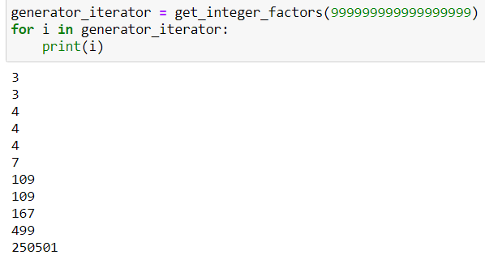
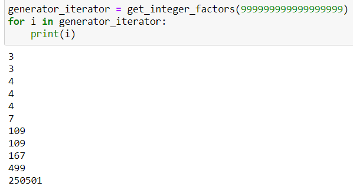

כשניסיתי לשחק עם מה שכתבתי, גיליתי שזה קצת משתבש בעבודה עם מספרים גדולים, למשל:

כמובן שהמספר לא אמור להתחלק ב-4…
זה עובד טוב עבור הדוגמה ועבור מספרים קטנים יותר.
מישהו יודע להסביר?

כשניסיתי לשחק עם מה שכתבתי, גיליתי שזה קצת משתבש בעבודה עם מספרים גדולים, למשל:

כמובן שהמספר לא אמור להתחלק ב-4…
זה עובד טוב עבור הדוגמה ועבור מספרים קטנים יותר.
מישהו יודע להסביר?
התוצאה אצלי:
3
3
7
109
109
167
499
250501
לי לא יצאה התוצאה הזו… אולי כדאי שתבדקו במחשבון
אני בדקתי, יצא לך נכון, אבל אני לא בטוח 100% כי יש מלא אפסים אז לא בטוח שעקבתי בכולם…
יצאה לך טעות… (נראה לי - אם יש 18 אפסים)
אם אני לא טועה, יצא לך נכון…
מספר שנגמר ב-9 לא יכול להתחלק ב-4…
אני חוזר בי. יש כאן אכן בעיה. מצד אחד ברור שהספרה 4 לא צריכה להופיע כי היא לא ראשונית…
מצד שני גם הפתרון אצלי לא נכון, כי זה לא מגיע למספר.
יתכן שיש כאן עניין של הקצאת זכרון, כלומר בגלל גודל המספר הוא מוגדר אחרת בזכרון, וזה יוצר את הבעיה…
כן, זה אכן נכון, אני מתכוון לתוצאות הסופיות…